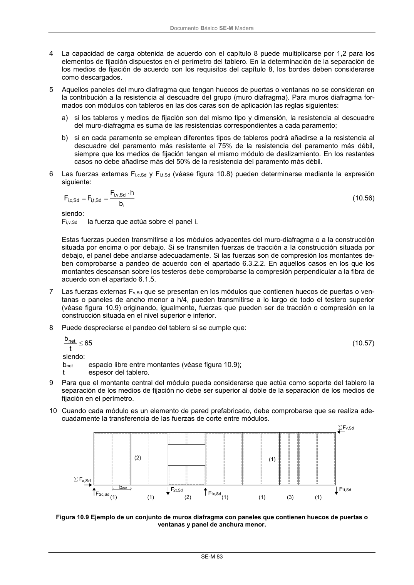

DB-SE-M Madera · edición 2019-12-20 · capa oficial
Documento DB-SE-M-oficial · SHA-256 del PDF 26b5819839ebfda78b0b119c5e76a0a37773b0d763c05688541870075df93718
Página física 89 de 132.
Copia fiel del PDF fuente · Fuente oficial
Ficha de la disposición en la fuente oficial
Formato: Texto de la página (Markdown)
Documento Básico SE-M Madera SE-M 83 4 La capacidad de carga obtenida de acuerdo con el capítulo 8 puede multiplicarse por 1,2 para los elementos de fijación dispuestos en el perímetro del tablero. En la determinación de la separación de los medios de fijación de acuerdo con los requisitos del capítulo 8, los bordes deben considerarse como descargados. 5 Aquellos paneles del muro diafragma que tengan huecos de puertas o ventanas no se consideran en la contribución a la resistencia al descuadre del grupo (muro diafragma). Para muros diafragma for- mados con módulos con tableros en las dos caras son de aplicación las reglas siguientes: a) si los tableros y medios de fijación son del mismo tipo y dimensión, la resistencia al descuadre del muro-diafragma es suma de las resistencias correspondientes a cada paramento; b) si en cada paramento se emplean diferentes tipos de tableros podrá añadirse a la resistencia al descuadre del paramento más resistente el 75% de la resistencia del paramento más débil, siempre que los medios de fijación tengan el mismo módulo de deslizamiento. En los restantes casos no debe añadirse más del 50% de la resistencia del paramento más débil. 6 Las fuerzas externas Fi,c,Sd y Fi,t,Sd (véase figura 10.8) pueden determinarse mediante la expresión siguiente: i Sd , v,i Sd ,t,i Sd , c,i b h F F F (10.56) siendo: Fi,v,Sd la fuerza que actúa sobre el panel i. Estas fuerzas pueden transmitirse a los módulos adyacentes del muro-diafragma o a la construcción situada por encima o por debajo. Si se transmiten fuerzas de tracción a la construcción situada por debajo, el panel debe anclarse adecuadamente. Si las fuerzas son de compresión los montantes de- ben comprobarse a pandeo de acuerdo con el apartado 6.3.2.2. En aquellos casos en los que los montantes descansan sobre los testeros debe comprobarse la compresión perpendicular a la fibra de acuerdo con el apartado 6.1.5. 7 Las fuerzas externas Fv,Sd que se presentan en los módulos que contienen huecos de puertas o ven- tanas o paneles de ancho menor a h/4, pueden transmitirse a lo largo de todo el testero superior (véase figura 10.9) originando, igualmente, fuerzas que pueden ser de tracción o compresión en la construcción situada en el nivel superior e inferior. 8 Puede despreciarse el pandeo del tablero si se cumple que: 65 t bnet (10.57) siendo: bnet espacio libre entre montantes (véase figura 10.9); t espesor del tablero. 9 Para que el montante central del módulo pueda considerarse que actúa como soporte del tablero la separación de los medios de fijación no debe ser superior al doble de la separación de los medios de fijación en el perímetro. 10 Cuando cada módulo es un elemento de pared prefabricado, debe comprobarse que se realiza ade- cuadamente la transferencia de las fuerzas de corte entre módulos. Figura 10.9 Ejemplo de un conjunto de muros diafragma con paneles que contienen huecos de puertas o ventanas y panel de anchura menor.
